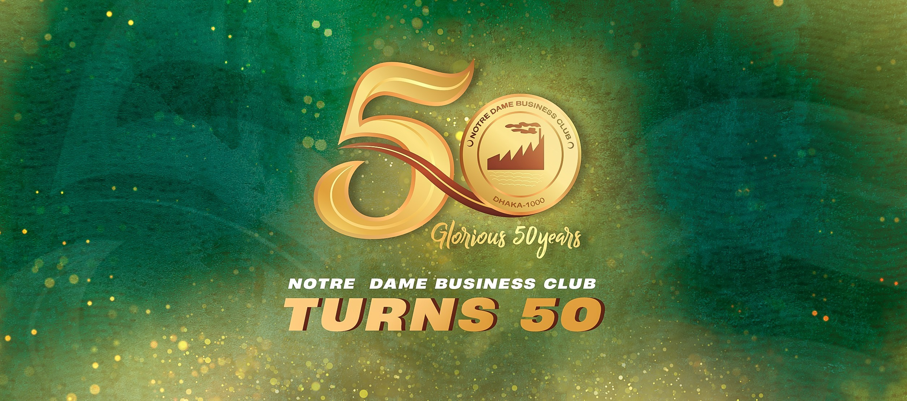
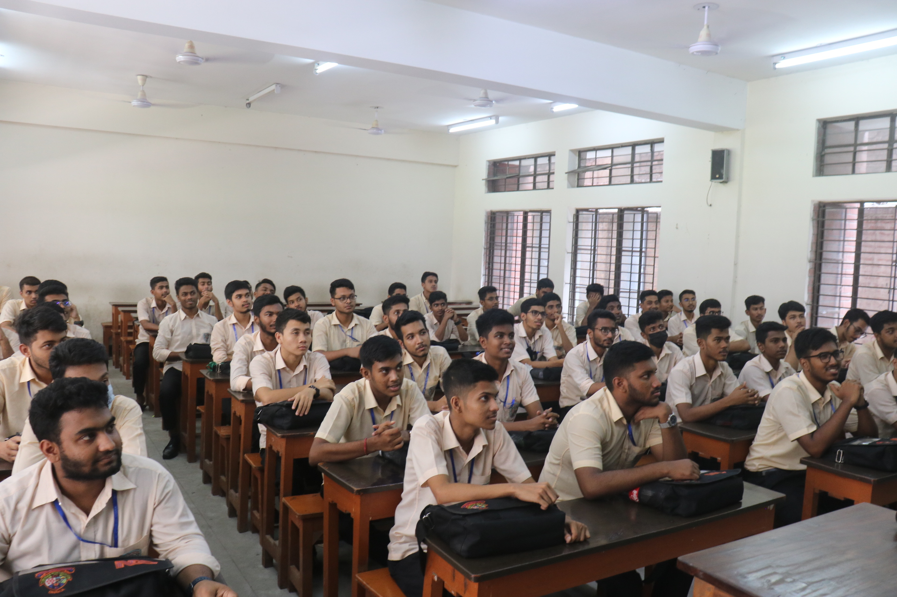
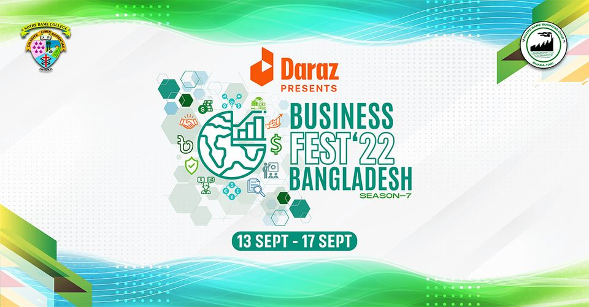

Our 50th Anniversary
The significance of the Notre Dame Business Club's 50th anniversary cannot be overstated. This milestone represents not only half a century of existence but also a continuous commitment to excellence, growth, and the betterment of its members and the broader business community.

Our Members Define Us
The Notre Dame Business Club owes much of its success to its amazing members. These folks, from various backgrounds and professions, are at the heart of the club. They bring valuable experience and enthusiasm, making the club a lively and informative place.
The club's alumni are a testament to its members' achievements. These folks have excelled in their careers, showcasing the club's impact. As we celebrate the 50th anniversary, we give a big shout-out to the members for their support and dedication, making the club a beacon of opportunity for years to come.

Fests Like Never Before
The Notre Dame Business Club is not just about business, it's also known for its fantastic festivals and events. These gatherings are a great way for members to relax, connect, and have fun. Throughout the year, the club organizes a variety of events. These occasions allow members to unwind, forge deeper connections, and celebrate their shared interests beyond the professional realm.
Our Caring Executives
The caring executives of the Notre Dame Business Club are the cornerstone of its success. These dedicated leaders go above and beyond to ensure that the club thrives and that its members feel valued and supported. Their commitment to mentorship and guidance is truly remarkable. Our executives take the time to offer advice, share their experiences, and provide valuable insights, helping members navigate their professional journeys.